Envelope 02 · Safar
Imam Hasan
The design
Style M1 — Charcoal Line
Every envelope in the box has its own style. This one is set in Young Serif and Nunito Sans. Every item at true size → · Print PDF


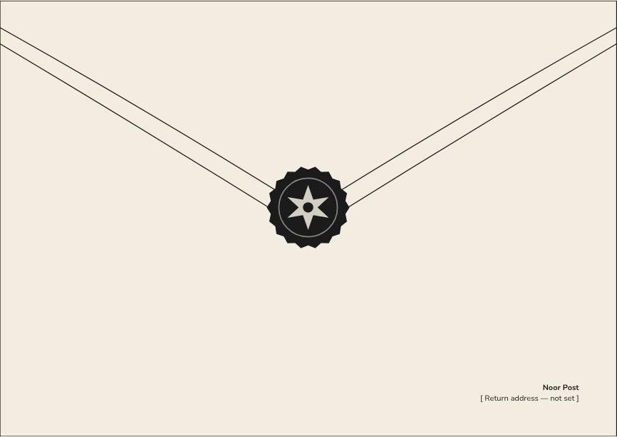

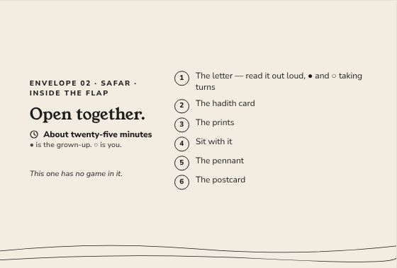

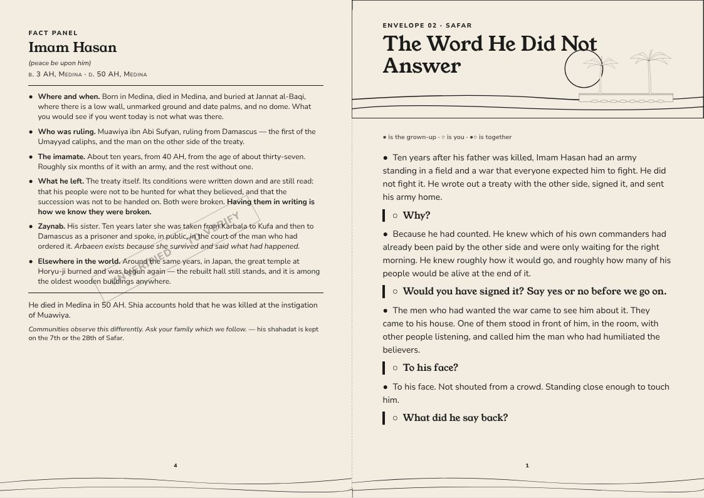

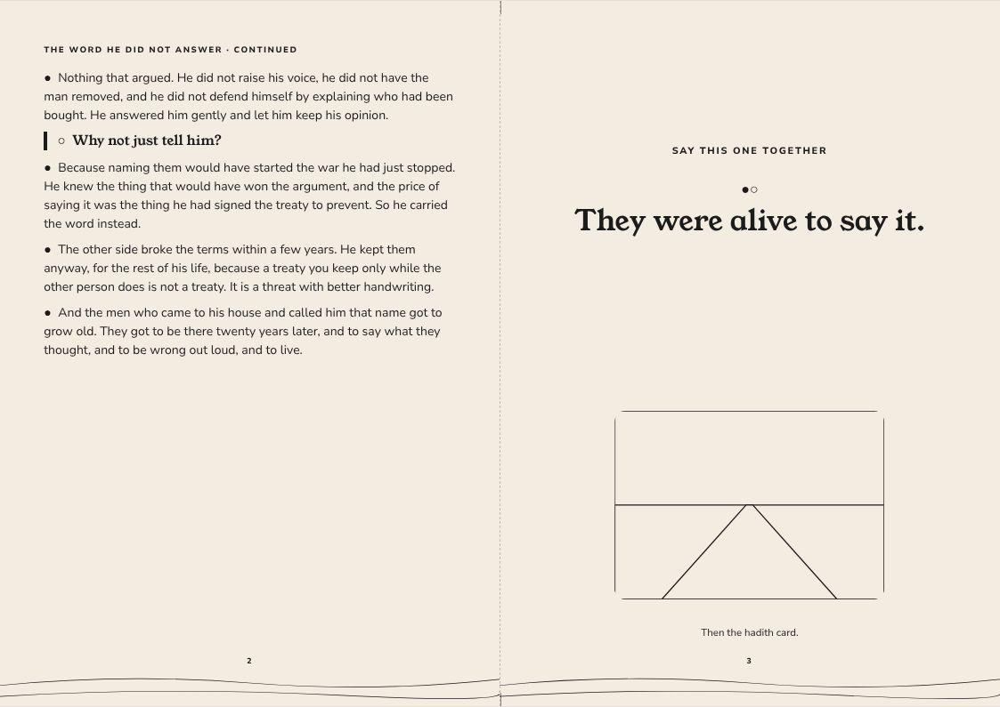

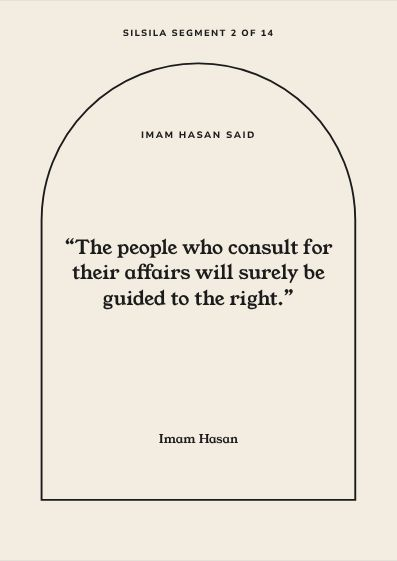

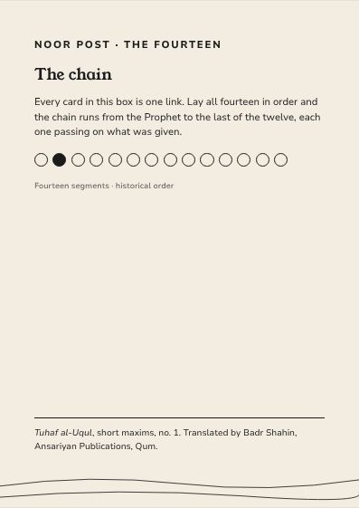

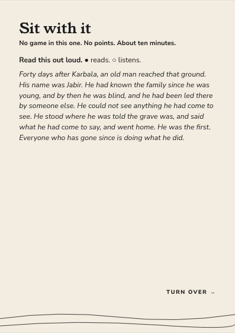

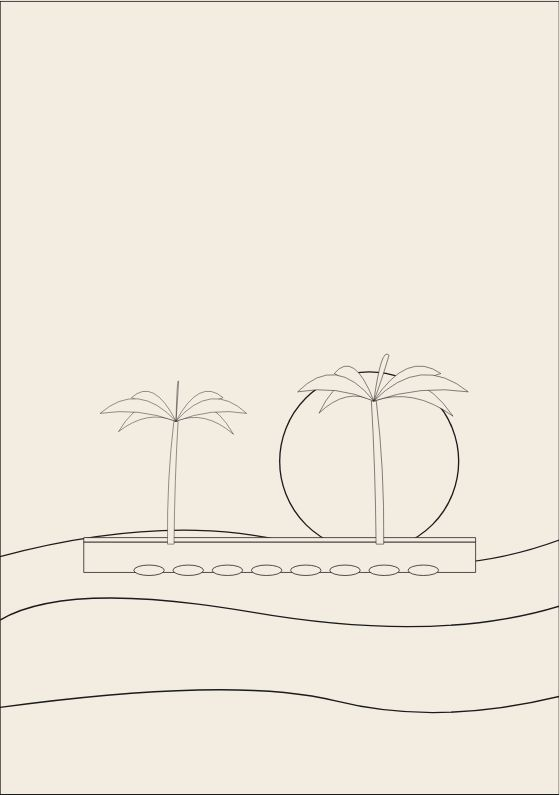

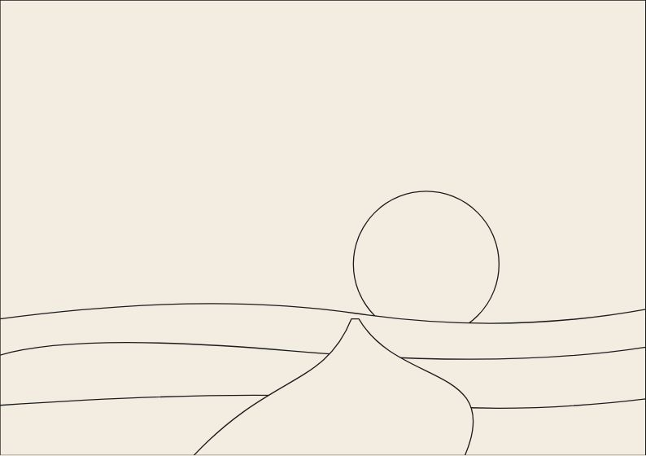

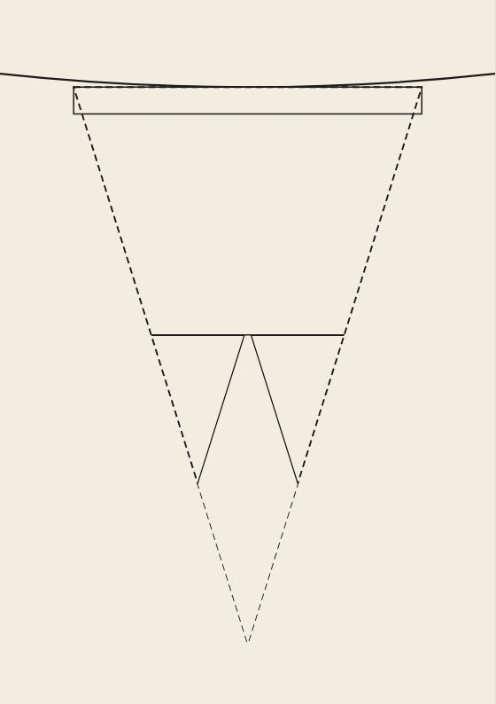

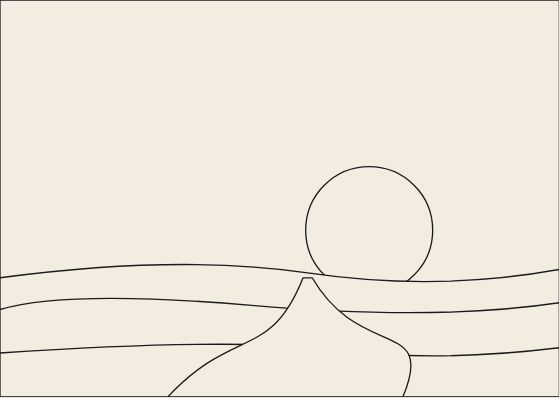
The artwork fixes composition, colour and medium for every item; final illustration is still to be commissioned. The fact panel is still to verify.
Inside the flap
Open together. About twenty-five minutes.
- The letter — read it out loud, ● and ○ taking turns
- The hadith card
- The prints
- Sit with it
- The pennant
- The postcard
● is the grown-up. ○ is you.
This one has no game in it.
The Word He Did Not Answer
● the grown-up · ○ the child · ●○ together
●Ten years after his father was killed, Imam Hasan had an army standing in a field and a war that everyone expected him to fight. He did not fight it. He wrote out a treaty with the other side, signed it, and sent his army home.
○Why?
●Because he had counted. He knew which of his own commanders had already been paid by the other side and were only waiting for the right morning. He knew roughly how it would go, and roughly how many of his people would be alive at the end of it.
○Would you have signed it? Say yes or no before we go on.
●The men who had wanted the war came to see him about it. They came to his house. One of them stood in front of him, in the room, with other people listening, and called him the man who had humiliated the believers.
○To his face?
●To his face. Not shouted from a crowd. Standing close enough to touch him.
○What did he say back?
●Nothing that argued. He did not raise his voice, he did not have the man removed, and he did not defend himself by explaining who had been bought. He answered him gently and let him keep his opinion.
○Why not just tell him?
●Because naming them would have started the war he had just stopped. He knew the thing that would have won the argument, and the price of saying it was the thing he had signed the treaty to prevent. So he carried the word instead.
●The other side broke the terms within a few years. He kept them anyway, for the rest of his life, because a treaty you keep only while the other person does is not a treaty. It is a threat with better handwriting.
●And the men who came to his house and called him that name got to grow old. They got to be there twenty years later, and to say what they thought, and to be wrong out loud, and to live.
●○They were alive to say it.
Letter, reverse
IMAM HASAN
(peace be upon him) b. 3 AH, Medina · d. 50 AH, Medina
●Where and when. Born in Medina, died in Medina, and buried at Jannat al-Baqi, where there is a low wall, unmarked ground and date palms, and no dome. What you would see if you went today is not what was there.
●Who was ruling. Muawiya ibn Abi Sufyan, ruling from Damascus — the first of the Umayyad caliphs, and the man on the other side of the treaty.
●The imamate. About ten years, from 40 AH, from the age of about thirty-seven. Roughly six months of it with an army, and the rest without one.
●What he left. The treaty itself. Its conditions were written down and are still read: that his people were not to be hunted for what they believed, and that the succession was not to be handed on. Both were broken. Having them in writing is how we know they were broken.
●Zaynab. His sister. Ten years later she was taken from Karbala to Kufa and then to Damascus as a prisoner and spoke, in public, in the court of the man who had ordered it. Arbaeen exists because she survived and said what had happened.
●Elsewhere in the world. Around the same years, in Japan, the great temple at Horyu-ji burned and was begun again — the rebuilt hall still stands, and it is among the oldest wooden buildings anywhere.
He died in Medina in 50 AH. Shia accounts hold that he was killed at the instigation of Muawiya.
Communities observe this differently. Ask your family which we follow. — his shahadat is kept on the 7th or the 28th of Safar.
Hadith card · Silsila segment 2 of 14
The people who consult for their affairs will surely be guided to the right.
Tuhaf al-Uqul, short maxims, no. 1 · trans. Badr Shahin
A saying of Imam Hasan. The envelope number never appears on this card.
Session card — Mourning
Sit with it
No game in this one. No points. About ten minutes.
Read this out loud. ● reads. ○ listens.
Forty days after Karbala, an old man reached that ground. His name was Jabir. He had known the family since he was young, and by then he was blind, and he had been led there by someone else. He could not see anything he had come to see. He stood where he was told the grave was, and said what he had come to say, and went home. He was the first. Everyone who has gone since is doing what he did.
One question.
Jabir could not see it. Why go?
Say it once. Do not discuss it.
Then sit quietly for two minutes. Both of you.